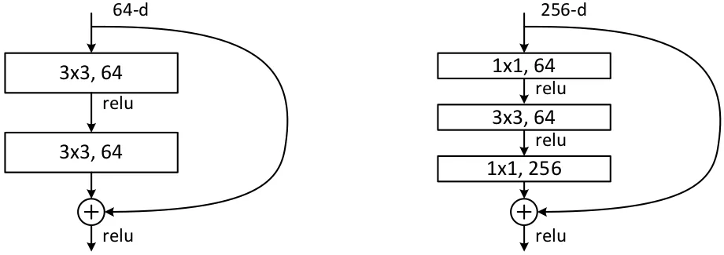
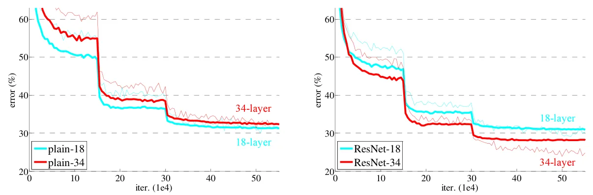
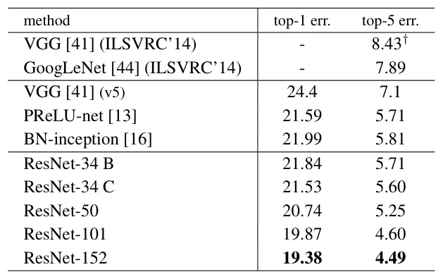

O problema da degradação
Redes neurais convolucionais profundas vinham dominando os resultados em classificação de imagens desde 2012. A intuição era clara: quanto mais camadas, mais níveis de abstração a rede pode aprender — de bordas simples até conceitos complexos como 'rosto' ou 'carro'. Os melhores modelos da época tinham entre 16 e 30 camadas, e a tendência era empilhar mais.
Mas havia um obstáculo surpreendente. Quando os pesquisadores da Microsoft Research tentaram treinar redes ainda mais profundas, algo inesperado aconteceu: o erro de treinamento aumentou. Não era overfitting — o modelo não estava decorando os dados. Era pior: a rede simplesmente não conseguia aprender, mesmo no conjunto de treino.
A Figura 1 mostra o fenômeno em CIFAR-10: uma rede de 56 camadas tem erro de treino e teste maior que uma de 20 camadas. Isso é contra-intuitivo. Em teoria, a rede mais profunda poderia simplesmente copiar a arquitetura da rede rasa nas primeiras 20 camadas e usar as 36 camadas extras como mapeamentos de identidade (que não fazem nada). Ela deveria ter, no mínimo, o mesmo desempenho. Mas não tem.

Por que redes profundas não treinam?
O problema clássico de vanishing gradients — quando o gradiente desaparece ao propagar para trás em redes muito profundas — já tinha sido em grande parte resolvido por técnicas como inicialização normalizada e batch normalization. As redes começavam a convergir, mas depois degradavam.
Os autores argumentam que o problema é de otimização, não de capacidade. Os algoritmos de otimização atuais (SGD com backpropagation) simplesmente não conseguem encontrar boas soluções para redes muito profundas, mesmo que essas soluções existam. A rede de 34 camadas tem dificuldade de aprender algo que a de 18 camadas aprende facilmente, mesmo que o espaço de soluções da rede mais profunda contenha todas as soluções da rede mais rasa.
A hipótese dos autores: é muito difícil para camadas empilhadas aprenderem diretamente o mapeamento desejado H(x). Mas pode ser mais fácil aprender o resíduo — a diferença entre o que você quer e o que você já tem.
A ideia das conexões residuais
A solução proposta é elegante. Em vez de fazer cada conjunto de camadas aprender diretamente o mapeamento desejado H(x), os autores reformulam o problema: as camadas aprendem F(x) = H(x) - x, o resíduo. A saída final é F(x) + x, onde o '+x' vem de uma conexão de atalho (shortcut connection) que pula as camadas.
Matematicamente, se o mapeamento ideal for próximo da identidade (ou seja, a entrada deve passar quase inalterada), é muito mais fácil empurrar F(x) para zero do que fazer um conjunto de camadas não-lineares aprender uma função identidade. No caso extremo, se a identidade for ótima, a rede simplesmente zera os pesos de F(x) e deixa o atalho fazer o trabalho.
Na prática, isso significa adicionar uma conexão direta que pula uma ou mais camadas. A saída do bloco residual é a soma da transformação aprendida F(x) com a entrada original x. Essas conexões de atalho não adicionam parâmetros nem complexidade computacional — são apenas somas elemento a elemento.

Arquitetura e implementação
Os autores testaram várias profundidades: 18, 34, 50, 101 e 152 camadas. Para as redes mais profundas (50+), usaram blocos 'bottleneck': três camadas (1×1, 3×3, 1×1) em vez de duas (3×3, 3×3). As convoluções 1×1 reduzem e depois restauram dimensões, mantendo a complexidade controlada.
Quando as dimensões mudam (por exemplo, ao fazer downsampling), os autores testaram duas estratégias para os atalhos: (A) zero-padding para igualar dimensões, sem parâmetros extras; (B) projeção linear 1×1 para ajustar dimensões. A opção A já funcionou muito bem, mostrando que o mecanismo não depende de parâmetros nos atalhos.
Todos os modelos foram treinados no ImageNet (1,28 milhão de imagens, 1000 classes) com SGD, batch normalization, e as práticas padrão de data augmentation. A comparação foi feita contra redes 'plain' idênticas, mas sem as conexões residuais.
Resultados no ImageNet
Os resultados confirmaram a hipótese. Nas redes plain, a de 34 camadas teve erro de validação maior (28,54%) que a de 18 camadas (27,94%). Nas ResNets, a tendência se inverteu: a de 34 camadas alcançou 25,03% de erro, superando a de 18 camadas (27,88%).
A ResNet-152, com 152 camadas — 8× mais profunda que a VGG-16 — alcançou 4,49% de erro top-5 no conjunto de validação do ImageNet. Um ensemble de ResNets chegou a 3,57% de erro no conjunto de teste, vencendo a competição ILSVRC 2015.
Importante: a ResNet-152 tem menos parâmetros e menos FLOPs (operações de ponto flutuante) que a VGG-16, apesar de ser muito mais profunda. A eficiência vem dos blocos bottleneck e da ausência de camadas totalmente conectadas gigantes.

Além da classificação
O impacto das ResNets foi além do ImageNet. No COCO object detection, o uso de ResNets como backbone trouxe 28% de melhoria relativa. A equipe venceu também as tarefas de detecção, localização e segmentação no ILSVRC e COCO 2015.
O paper argumenta que a profundidade das representações é central para tarefas de reconhecimento visual. Modelos mais profundos capturam hierarquias mais ricas de features, e as ResNets finalmente permitiram explorar essa profundidade sem barreiras de otimização.

O que o paper não resolve
O paper é honesto sobre o que não explica completamente. Por que exatamente a formulação residual facilita a otimização? A hipótese é plausível, mas os autores admitem que a razão fundamental para as dificuldades de otimização em redes plain profundas ainda precisa ser estudada.
Também não há análise teórica rigorosa. Os resultados são empíricos: funcionam consistentemente em múltiplos datasets e tarefas, mas a compreensão matemática de por que o aprendizado residual é mais fácil ainda estava em aberto na época da publicação.
Outra limitação: os experimentos focam em visão computacional. O mecanismo é geral e foi depois aplicado a outras áreas (NLP, áudio), mas o paper em si não explora esses domínios.
Por que este paper importa
ResNet não foi apenas um modelo melhor — foi uma mudança de paradigma. Mostrou que o problema de treinar redes profundas não era fundamental, mas de formulação. A ideia das conexões residuais é simples o suficiente para ser implementada em poucas linhas de código, mas poderosa o suficiente para desbloquear arquiteturas de centenas de camadas.
Desde 2015, variações de ResNet se tornaram o backbone padrão em visão computacional. A arquitetura influenciou praticamente todos os modelos posteriores: DenseNet, EfficientNet, e até Transformers de visão usam conceitos de conexões residuais. É um dos papers mais citados em deep learning.
O legado é duplo: técnico (uma ferramenta que funciona) e conceitual (uma nova forma de pensar sobre o que redes profundas devem aprender). Em vez de forçar cada camada a aprender tudo do zero, deixe-as refinar incrementalmente. Às vezes, a melhor coisa que uma camada pode aprender é não fazer quase nada — e as ResNets tornam isso fácil.
O que fica
- Redes neurais muito profundas sofrem de degradação: o erro de treino aumenta com mais camadas, não por overfitting, mas por dificuldade de otimização.
- Conexões residuais (atalhos que pulam camadas) reformulam o problema: em vez de aprender H(x), as camadas aprendem F(x) = H(x) - x, o resíduo, que é mais fácil de otimizar.
- ResNet-152 venceu o ImageNet 2015 com 3,57% de erro (ensemble), usando 8× mais camadas que VGG mas menos parâmetros, provando que profundidade bem implementada traz ganhos reais.
- O mecanismo é simples (soma de atalhos, sem parâmetros extras) mas poderoso: permitiu treinar redes de até 1000 camadas e virou o backbone padrão em visão computacional.
Paper original: Deep Residual Learning for Image Recognition
Comentários
Nenhum comentário ainda. Seja o primeiro.